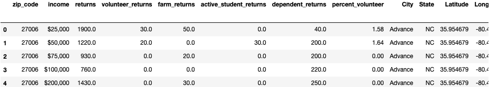
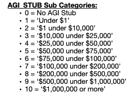
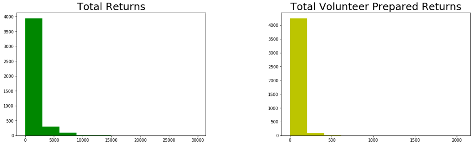
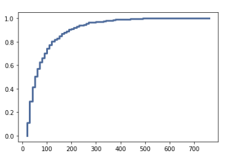
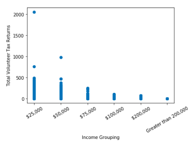
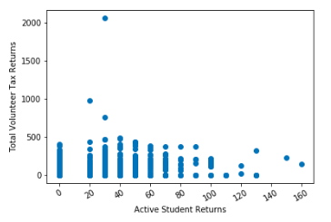

Overview
Does a person's adjusted gross income play a factor in whether they will have their taxes done by a volunteer in North Carolina? That is the central question I was attempting to answer with this project. Filing taxes should be a simple and painless activity undertaken yearly by Americans. However, there are countless Americans out there who do not file taxes simply becuase they do not know how or were never taught how to file in the first place. These Americans could be leaving hundreds, to even thousands of dollars on the table. Thankfully, there are volunteers who graciously use their time and expertise to help those in need come tax time every year.
VITA is small but mighty. In 2019, more than 80,000 volunteers prepared 3 1/2 million tax returns, (DOUGLAS, 2021).
I wanted to understand the demographics around those who used this volunteer tax preperation service in an attempt to further streghten the awareness and availability of the VITA program throughout the country. To start, I performed my analysis on the state of North Carolina.
Hypothesis
My hypothesis is yes, people in lower income tax groupings take advantage of volunteer tax return services more than people in higher income tax groupings. I also wanted to look at other variables to see if there were any trends in volunteer prepared returns and the people who are more likely to use this service including:
- The number of dependents for tax filer
- City
- Farm Returns
- Students
The Data
 Sample of the datatset I will be using to perform my analysis.I used the 2017 Individual Income and Tax Data from IRS.gov. This dataset is from the IRS' Statistics of Income (SOI) Division that uses individual income tax returns for the tax year 2017. The dataset contains a variable called AGI_STUB. This variable is broken down into ten subcategories based on adjusted gross income grouping. I used these nine subcategories along with the variable TOTAL_VITA, which is the total number of volunteer prepared returns for each sub AGI_STUB category.
 AGI_STUB categoriesIn addition to AGI_STUB and TOTAL_VITA, I will be looking at the variables STATE, N1, NUMDEP, SCHF and A03210. These variables are defined as:
- STATE: The state associated with the return.
- N1: The total number of returns
- NUMDEP: The total number of dependents
- SCHF: The total number of farm returns
- A03210:: The total amount Student loan interest deduction amount
- N19300:: Number of returns with mortgage interest paid
Method
This project was mainly focused on the exploratory data analysis (EDA) portion of the Data Science project life cycle/ Therefore, I went into depth on the various EDA aspects of the data.
I first created visuals of the distributions of the data to understand their skewness, if there were any skew or kurtosis, and performed an outlier analysis.
 Distirbutions of the total volunteer prepared returns and overall total returnsI created a cumulative distribution function (CDF) and it showed that the most common values are are between 20 and 100. This means the most common amount of volunteer tax returns by zip code is between 20 and 100. Also, the CDF showed me that about 10% of volunteer tax returns are between 0-10 and about 90% are less than 300 volunteer filed tax returns.
 Total Volunteer Tax Returns CDFPlotting the variables on a scatter plot highlighted that there was negative linear relationship between the number of volunteer tax returns filed and the income grouping. This calculation tells us that as income increases, the number of volunteer tax returns decrease. This correlation doesn't imply causation. The correlation is only telling us which direction the two variables move together
 Scatterplot of the number of volunteer tax returns and income groupingA second plot of the number student filed tax returns and the number of volunteer filed tax returns resulted in a positive linear relationship. this calculation tells us that as number student tax return filers increases, the number of volunteer tax returns increases.
 Scatterplot of the number of volunteer tax returns and student filed returnsOnce the data was collected, inspected, and perfected, I ran my data through a single variable regression and a multivariate regression analysis to determine if the variables I had chosen were high quality predictors of the number of volunteer prepared tax returns.
Results
When performing a single variable regression analysis on the effect of income grouping on volunteer tax return, the R squared resulted in 0.11 with a p-value less than 0.05. This indicates that the model is statistically significant with the income grouping predicting 11% of variance in the amount of volunteer tax returns filed.
When performing a mulitple variable regression analysis on the effect of income grouping, student filed tax returns on volunteer tax return, the R squared resulted in 0.11 with a p-value less than 0.05. This indicates that the model is statistically significant with the income grouping predicting 11% of variance in the amount of volunteer tax returns filed.
Conclusion
My exploratory data analysis (EDA) resulted in a couple of different findings from the various exploratory testing performed on the data. All five of my variables mentioned above skewed left towards zero. This is why I chose to use Spearman’s Rank correlation test statistic instead of Pearson’s Correlation test for validation. The last, and maybe most important finding from my EDA was that there was a stistcically significant relationship between the income grouping and the number of volunteer tax returns filed by zip code. When performing a regression analysis on the effect of income grouping on volunteer tax return, the R squared resulted in 0.11 with a p-value less than 0.05. This indicates that the model is statistically significant with the income grouping predicting 11% of variance in the amount of volunteer tax returns filed.
Citations
DOUGLAS, S. (2021, May 5). The VITA(L) Role Of Free Tax Prep. Retrieved May 12, 2021, from https://choice.npr.org/index.html?origin=https://www.npr.org/transcripts/993965671